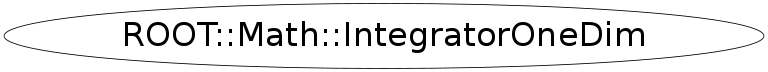

class ROOT::Math::IntegratorOneDim
User Class for performing numerical integration of a function in one dimension.
It uses the plug-in manager to load advanced numerical integration algorithms from GSL, which reimplements the
algorithms used in the QUADPACK, a numerical integration package written in Fortran.
Various types of adaptive and non-adaptive integration are supported. These include
integration over infinite and semi-infinite ranges and singular integrals.
The integration type is selected using the Integration::type enumeration
in the class constructor.
The default type is adaptive integration with singularity
(ADAPTIVESINGULAR or QAGS in the QUADPACK convention) applying a Gauss-Kronrod 21-point integration rule.
In the case of ADAPTIVE type, the integration rule can also be specified via the
Integration::GKRule. The default rule is 31 points.
In the case of integration over infinite and semi-infinite ranges, the type used is always
ADAPTIVESINGULAR applying a transformation from the original interval into (0,1).
The ADAPTIVESINGULAR type is the most sophicticated type. When performances are
important, it is then recommened to use the NONADAPTIVE type in case of smooth functions or
ADAPTIVE with a lower Gauss-Kronrod rule.
For detailed description on GSL integration algorithms see the
<A HREF="http://www.gnu.org/software/gsl/manual/gsl-ref_16.html#SEC248">GSL Manual</A>.
@ingroup Integration
This class is also known as (typedefs to this class)
ROOT::Math::IntegratorFunction Members (Methods)
public:
| virtual | ~IntegratorOneDim() |
| double | Error() const |
| ROOT::Math::VirtualIntegratorOneDim* | GetIntegrator() |
| static string | GetName(ROOT::Math::IntegrationOneDim::Type) |
| static ROOT::Math::IntegrationOneDim::Type | GetType(const char* name) |
| double | Integral() |
| double | Integral(const ROOT::Math::IGenFunction& f) |
| double | Integral(const vector<double>& pts) |
| double | Integral(const ROOT::Math::IGenFunction& f, const vector<double>& pts) |
| double | Integral(double a, double b) |
| double | Integral(const ROOT::Math::IGenFunction& f, double a, double b) |
| double | IntegralCauchy(double a, double b, double c) |
| double | IntegralCauchy(const ROOT::Math::IGenFunction& f, double a, double b, double c) |
| double | IntegralLow(double b) |
| double | IntegralLow(const ROOT::Math::IGenFunction& f, double b) |
| double | IntegralUp(double a) |
| double | IntegralUp(const ROOT::Math::IGenFunction& f, double a) |
| ROOT::Math::IntegratorOneDim | IntegratorOneDim(ROOT::Math::IntegrationOneDim::Type type = IntegrationOneDim::kDEFAULT, double absTol = 0, double relTol = 0, unsigned int size = 0, unsigned int rule = 0) |
| ROOT::Math::IntegratorOneDim | IntegratorOneDim(const ROOT::Math::IGenFunction& f, ROOT::Math::IntegrationOneDim::Type type = IntegrationOneDim::kDEFAULT, double absTol = 0, double relTol = 0, unsigned int size = 0, int rule = 0) |
| string | Name() const |
| int | NEval() const |
| double | operator()(double x) |
| ROOT::Math::IntegratorOneDimOptions | Options() const |
| double | Result() const |
| void | SetAbsTolerance(double absTolerance) |
| void | SetFunction(const ROOT::Math::IGenFunction& f, bool copy = false) |
| void | SetFunction(const ROOT::Math::IMultiGenFunction& f, unsigned int icoord, const double* x) |
| void | SetOptions(const ROOT::Math::IntegratorOneDimOptions& opt) |
| void | SetRelTolerance(double relTolerance) |
| int | Status() const |
protected:
| ROOT::Math::VirtualIntegratorOneDim* | CreateIntegrator(ROOT::Math::IntegrationOneDim::Type type, double absTol, double relTol, unsigned int size, int rule) |
private:
| ROOT::Math::IntegratorOneDim | IntegratorOneDim(const ROOT::Math::IntegratorOneDim&) |
| ROOT::Math::IntegratorOneDim& | operator=(const ROOT::Math::IntegratorOneDim&) |
Data Members
private:
| auto_ptr<ROOT::Math::IBaseFunctionOneDim> | fFunc | pointer to owned function |
| ROOT::Math::VirtualIntegratorOneDim* | fIntegrator | pointer to integrator interface class |
Class Charts
{kind=link}
{kind=link}
{kind=link}
{kind=link}

Function documentation
void SetFunction( Function & f)
double Integral(const ROOT::Math::IGenFunction& f, double a, double b)
double Integral(double a, double b)
double IntegralCauchy(const ROOT::Math::IGenFunction& f, double a, double b, double c)
IntegratorOneDim(ROOT::Math::IntegrationOneDim::Type type = IntegrationOneDim::kDEFAULT, double absTol = 0, double relTol = 0, unsigned int size = 0, unsigned int rule = 0)
constructors
Constructor of one dimensional Integrator, default type is adaptive
@param type integration type (adaptive, non-adaptive, etc..)
@param absTol desired absolute Error
@param relTol desired relative Error
@param size maximum number of sub-intervals
@param rule Gauss-Kronrod integration rule (only for GSL kADAPTIVE type)
Possible type values are : kGAUSS (simple Gauss method), kADAPTIVE (from GSL), kADAPTIVESINGULAR (from GSL), kNONADAPTIVE (from GSL)
Possible rule values are kGAUS15 (rule = 1), kGAUS21( rule = 2), kGAUS31(rule =3), kGAUS41 (rule=4), kGAUS51 (rule =5), kGAUS61(rule =6)
lower rules are indicated for singular functions while higher for smooth functions to get better accuracies
NOTE: When the default values are passed, the values used are taken from the default defined in ROOT::Math::IntegratorOneDimOptions
IntegratorOneDim(const ROOT::Math::IGenFunction& f, ROOT::Math::IntegrationOneDim::Type type = IntegrationOneDim::kDEFAULT, double absTol = 0, double relTol = 0, unsigned int size = 0, int rule = 0)
Constructor of one dimensional Integrator passing a function interface
@param f integration function (1D interface). It is copied inside
@param type integration type (adaptive, non-adaptive, etc..)
@param absTol desired absolute Error
@param relTol desired relative Error
@param size maximum number of sub-intervals
@param rule Gauss-Kronrod integration rule (only for GSL ADAPTIVE type)
NOTE: When the default values are passed, the values used are taken from the default defined in ROOT::Math::IntegratorOneDimOptions
SetFunction(const ROOT::Math::IGenFunction& f, bool copy = false)
IntegratorOneDim(const ROOT::Math::IGenFunction& f, ROOT::Math::IntegrationOneDim::Type type = IntegrationOneDim::kDEFAULT, double absTol = 0, double relTol = 0, unsigned int size = 0, int rule = 0)
Template Constructor of one dimensional Integrator passing a generic function object
@param f integration function (any C++ callable object implementing operator()(double x)
@param type integration type (adaptive, non-adaptive, etc..)
@param absTol desired absolute Error
@param relTol desired relative Error
@param size maximum number of sub-intervals
@param rule Gauss-Kronrod integration rule (only for GSL ADAPTIVE type)
double Integral(const ROOT::Math::IGenFunction& f, double a, double b)
integration methods using a function
evaluate the Integral of a function f over the defined interval (a,b)
@param f integration function. The function type must be a C++ callable object implementing operator()(double x)
@param a lower value of the integration interval
@param b upper value of the integration interval
double Integral(const ROOT::Math::IGenFunction& f, double a, double b)
evaluate the Integral of a function f over the defined interval (a,b)
@param f integration function. The function type must implement the mathlib::IGenFunction interface
@param a lower value of the integration interval
@param b upper value of the integration interval
return Integral(const ROOT::Math::IGenFunction& f, const vector<double>& pts)
double Integral(const IGenFunction & f)
evaluate the Integral of a function f over the infinite interval (-inf,+inf)
@param f integration function. The function type must be a C++ callable object implementing operator()(double x)
template<class Function>
double Integral(const Function & f);
evaluate the Integral of a function f over the infinite interval (-inf,+inf)
@param f integration function. The function type must implement the mathlib::IGenFunction interface
double IntegralUp(const ROOT::Math::IGenFunction& f, double a)
evaluate the Integral of a function f over the semi-infinite interval (a,+inf)
@param f integration function. The function type must be a C++ callable object implementing operator()(double x)
@param a lower value of the integration interval
template<class Function>
double IntegralUp(Function & f, double a);
evaluate the Integral of a function f over the semi-infinite interval (a,+inf)
@param f integration function. The function type must implement the mathlib::IGenFunction interface
@param a lower value of the integration interval
return IntegralUp(double a)
double IntegralLow(const ROOT::Math::IGenFunction& f, double b)
evaluate the Integral of a function f over the over the semi-infinite interval (-inf,b)
@param f integration function. The function type must be a C++ callable object implementing operator()(double x)
@param b upper value of the integration interval
template<class Function>
double IntegralLow(Function & f, double b);
evaluate the Integral of a function f over the over the semi-infinite interval (-inf,b)
@param f integration function. The function type must implement the mathlib::IGenFunction interface
@param b upper value of the integration interval
return IntegralLow(double b)
double IntegralCauchy(const ROOT::Math::IGenFunction& f, double a, double b, double c)
evaluate the Cauchy principal value of the integral of a function f over the defined interval (a,b) with a singularity at c
@param f integration function. The function type must be a C++ callable object implementing operator()(double x)
@param a lower value of the integration interval
@param b upper value of the integration interval
@param c position of singularity
int NEval() const
return number of function evaluations in calculating the integral
(if integrator do not implement this function returns -1)
{ return fIntegrator == 0 ? -1 : fIntegrator->NEval(); }void SetRelTolerance(double relTolerance)
setter for control Parameters (getters are not needed so far )
set the desired relative Error
{ if (fIntegrator) fIntegrator->SetRelTolerance(relTolerance); }void SetAbsTolerance(double absTolerance)
set the desired absolute Error
{ if (fIntegrator) fIntegrator->SetAbsTolerance(absTolerance); }VirtualIntegratorOneDim * GetIntegrator()
return a pointer to integrator object
{ return fIntegrator; }void SetOptions(const ROOT::Math::IntegratorOneDimOptions& opt)
set the options
{ if (fIntegrator) fIntegrator->SetOptions(opt); }std::string Name() const
return name of integrator
{ return (fIntegrator) ? Options().Integrator() : std::string(""); }IntegrationOneDim::Type GetType(const char* name)
static function to get the enumeration from a string
std::string GetName(ROOT::Math::IntegrationOneDim::Type )
static function to get a string from the enumeration
VirtualIntegratorOneDim * CreateIntegrator(ROOT::Math::IntegrationOneDim::Type type, double absTol, double relTol, unsigned int size, int rule)